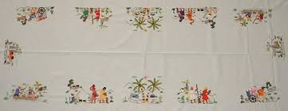
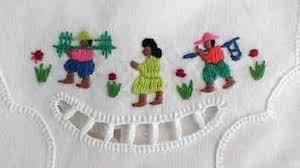

Bonjour à vous tous les internautes.
Ce site a pour but de vous donner le plus d'information possible sur l'art Malagasy
Madagascar est un pays riche !
Riche dans sa biodiversité,
dans sa culture et dans sa tradition.
Le peuple malgache est fier d’appartenir à cette île paradisiaque et magnifique.
Et il le montre bien !
La broderie prend une place spéciale en matière d’art malagasy, c’est juste magnifique. Le souci du détail, le travail fait main des artisans… nous montrent une qualité de produit, tout simplement splendide. La broderie malgache ou made in Mada brille par les techniques utilisées par les artisans et on adore ! Ces produits sont décorés à la malgache avec des couleurs vives et des dessins spécialement malgaches comme des rizières, des fleurs endémiques, etc.
On ne peut pas parler d’art malagasy sans évoquer la musique. Elle fait la renommée du pays dans le monde entier. Et, il faut dire que la musique malgache a ce trait de caractère spécifique qui se base sur le vécu et les émotions, non seulement de l’artiste, mais aussi de son public.
De plus, la conception de nos instruments de musique revêt un caractère traditionnel et typiquement malgache. Nous avons le sodina, le lokanga, la valiha ou encore le voatavo. Il ne faut pas oublier le tambour et le djembé, incontournables des fêtes traditionnelles malgaches.
La vannerie est, indéniablement, un art malagasy apprécié. Elle se distingue par les matières premières utilisées. Les fibres extraites du raphia et du sisal sont les plus prisées pour se faire de beaux accessoires.
Les sacs à main, les paniers ou encore les chapeaux sont les produits phares de la vannerie malagasy. Nul n’échappe à l’attraction que les jolies couleurs de cet art malagasy « provoquant ». Bien que la vannerie utilise une technique de tressage traditionnelle, la qualité de production et le design pallient modernité et beauté artistique.


Les malgaches ont hérité de la poterie de la culture asiatique. Nous avons su mettre à profit les bienfaits de l’argile à l’art et réaliser des chefs-d’œuvre. Pour, ainsi, décorer nos maisons avec des objets simples, élégants, et de surcroît, en harmonie avec la nature.
Cet art malagasy est parfait pour une décoration en bois et vert argile. Une petite touche traditionnelle dans une pièce où la modernité règne en maître.